快速接入
这一节的目的是介绍客户应用快速接入到 DMP 中，涉及到的概念或者原理请参考相关章节。
这里会以daoshop-admin服务为例，将会介绍如何接入服务注册与发现、配置中心、应用监控和分布式追踪四个功能模块。
相关源码：daoshop-admin
前提条件
- 对Java、Spring Boot/Cloud 了解或者熟悉；
- 对 Docker 了解或熟悉；
- 对 Kubernetes 了解或熟悉；
- 假设你已经创建了一个最简单的 Spring Boot/Cloud 工程项目;
- 演示使用各组件版本参考daoshop-admin#pom.xml;
接入准备
接入Eureka
- 在maven
pom.xml中引入Eureka Client依赖：参考pom.xml
......
<dependency>
<groupId>org.springframework.cloud</groupId>
<artifactId>spring-cloud-starter-netflix-eureka-client</artifactId>
</dependency>
......
- 添加或修改
src/main/resources/application.properties对Eureka的配置内容,参考application.properties：
......
eureka.client.service-url.defaultZone=${EUREKA_URL:http://daoshop-eureka:8761/eureka}
......
这里使用了${EUREKA_URL:http://daoshop-eureka:8761/eureka}的方式，这种方式允许我们通过EUREKA_URL环境变量的值来覆盖这里的配置。
接入配置中心
- 在配置中心创建配置组
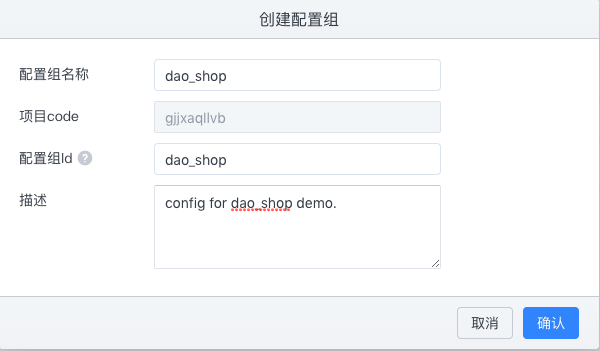
点击确认后，进入刚刚创建的配置组 ，里面有个默认的application.prpperties命名空间，我们点击新增配置。
出现弹框后在弹框中填写一下内容：
key:daoshop.main.imgvalue: 可以是任意值，不过和daoshop-admin程序有关，这里配置的是图片URL。因此可以选择一个或多个，用逗号隔开。比如：https://qiniu-download-public.daocloud.io/DaoCloud_MicroServices_Platform/dmp_logo.svg,https://www.daocloud.io/static/homepage/nvidia-gtc-china-2018.jpg,https://www.daocloud.io/static/contact-photo.png. 填写完成点击确认，然后点击发布
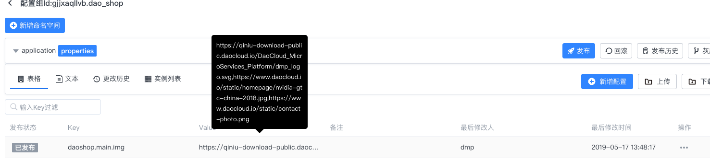
- 在maven
pom.xml中引入Apollo Client依赖：参考pom.xml
......
<dependency>
<groupId>com.ctrip.framework.apollo</groupId>
<artifactId>apollo-client</artifactId>
<version>${apollo.client.version}</version>
</dependency>
......
注意：如果拉取不到依赖包，请在pom中添加daocloud的nexus仓库或自己的私服地址：
<repositories>
<repository>
<id>labs-snapshots</id>
<url>http://nexus.mschina.io/nexus/content/repositories/labs-snapshot/</url>
<snapshots>
<enabled>true</enabled>
</snapshots>
</repository>
<repository>
<id>labs-releases</id>
<url>
http://nexus.mschina.io/nexus/content/repositories/labs/
</url>
</repository>
</repositories>
- 在启动类上面添加注解,参考AdminApplication:
......
@SpringBootApplication
@EnableApolloConfig
public class AdminApplication {
public static void main(String[] args) {
SpringApplication.run(AdminApplication.class, args);
}
}
......
- 接着在程序中使用上面配置的URL配置项,参考ImageController：
......
@Value("#{'${daoshop.main.img:https://qiniu-download-public.daocloud.io/DaoCloud_MicroServices_Platform/dmp_logo.svg}'.split(',')}")
private List<String> images;
@GetMapping("/image/main")
private List<String> getImgUrl(){
return images;
}
......
应用监控接入
- 在maven
pom.xml中引入collector-client依赖：参考pom.xml
......
<dependency>
<groupId>io.daocloud.mircoservice</groupId>
<artifactId>collector-client-starter-2x</artifactId>
<version>${collector-client.version}</version>
</dependency>
......
分布式追踪接入
由于该功能接入是采用 Java Agent 的方式接入的，不需要对程序做修改。因此，直接包含在构建镜像小节中。
构建镜像
- Dockerfile编写：
FROM openjdk:8-jre-alpine
LABEL maintainer="jian.tan@daocloud.io"
ENV DIST_NAME=admin \
APP_VERSION=0.0.1-SNAPSHOT \
AGENT_REPO_URL="http://nexus.mschina.io/nexus/content/repositories/labs/org/apache/skywalking/dmp/agent/2.0.1/agent-2.0.1.gz"
ADD $AGENT_REPO_URL /
COPY target/"$DIST_NAME-$APP_VERSION.jar" /"$DIST_NAME.jar"
RUN set -ex; \
tar -zxf /agent-2.0.1.gz; \
rm -rf agent-2.0.1.gz;
RUN ln -sf /usr/share/zoneinfo/Asia/Shanghai /etc/localtime \
&& echo "Asia/Shanghai" > /etc/timezone
EXPOSE 18083
ENTRYPOINT java -javaagent:/skywalking-agent/skywalking-agent.jar \
-XX:+PrintFlagsFinal -XX:+UnlockExperimentalVMOptions -XX:+UseCGroupMemoryLimitForHeap $JAVA_OPTS -jar /$DIST_NAME.jar
上面的 -javaagent:/skywalking-agent/skywalking-agent.jar 即为我们的服务加上分布式追踪的探针。
- Maven 打包
mvn clean package -DskipTests
- 镜像构建
docker build -t daoshop-shop-admin:2.0.x .
容器化运行
- 参数说明
| Key | 说明 | 示例 |
|---|---|---|
| EUREKA_URL | Eureka 地址 | http://127.0.10.1:8761/eureka |
| APOLLO_CONFIGSERVICE | 配置中心ConfigService地址 | http://127.0.10.2:8080 |
| APOLLO_APP_ID | 配置中心配置组ID | 上面步骤创建的：gjjxaqllvb.dao_shop |
| SW_AGENT_NAME | 服务名称 | daoshop_admin |
| SW_AGENT_COLLECTOR_BACKEND_SERVICES | 分布式追踪后端地址 | 127.0.10.3:11800 |
- Docker 方式运行
docker run -p 8080:8080 \
-e EUREKA_URL="http://127.0.10.1:8761/eureka" \
-e APOLLO_CONFIGSERVICE="http://127.0.10.2:8080" \
-e APOLLO_APP_ID="gjjxaqllvb.dao_shop" \
-e SW_AGENT_NAME=daoshop_admin \
-e SW_AGENT_COLLECTOR_BACKEND_SERVICES=127.0.10.3:11800 \
-d daoshop-shop-admin:2.0.x
- Kubernetes 方式运行
编排文件参考:kubernetes.yml:
apiVersion: apps/v1
kind: Deployment
metadata:
namespace: test
name: daoshop-shop-admin
labels:
app: daoshop-shop-admin
spec:
selector:
matchLabels:
app: daoshop-shop-admin
template:
metadata:
labels:
app: daoshop-shop-admin
spec:
containers:
- image: daoshop-shop-admin:2.0.x
name: daoshop-shop-admin
resources:
requests:
memory: "1000Mi"
cpu: "200m"
limits:
memory: "1000Mi"
cpu: "200m"
ports:
- containerPort: 18083
volumeMounts:
- name: host-time
mountPath: /etc/localtime
readOnly: true
env:
- name: APOLLO_APP_ID
value: "gjjxaqllvb.dao_shop"
- name: APOLLO_CONFIGSERVICE
value: "http://127.0.10.2:8080"
- name: SW_AGENT_NAME
value: daoshop-shop-admin
- name: SW_AGENT_COLLECTOR_BACKEND_SERVICES
value: "127.0.10.3:11800"
- name: EUREKA_URL
value: "http://127.0.10.1:8761/eureka"
volumes:
- name: host-time
hostPath:
path: /etc/localtime
---
apiVersion: v1
kind: Service
metadata:
namespace: test
name: daoshop-shop-admin
spec:
type: NodePort
ports:
- port: 18083
selector:
app: daoshop-shop-admin
kubectl apply -f kubernetes.yml
接入验证
程序正常启动验证
curl http://localhost:18083/admin/v1/image/main
响应如下：
[
"https://qiniu-download-public.daocloud.io/DaoCloud_MicroServices_Platform/dmp_logo.svg",
"https://www.daocloud.io/static/homepage/nvidia-gtc-china-2018.jpg",
"https://www.daocloud.io/static/contact-photo.png"
]
注意：需要根据自身程序的特点进行验证
DMP 管理界面验证
daoshop_admin服务上线
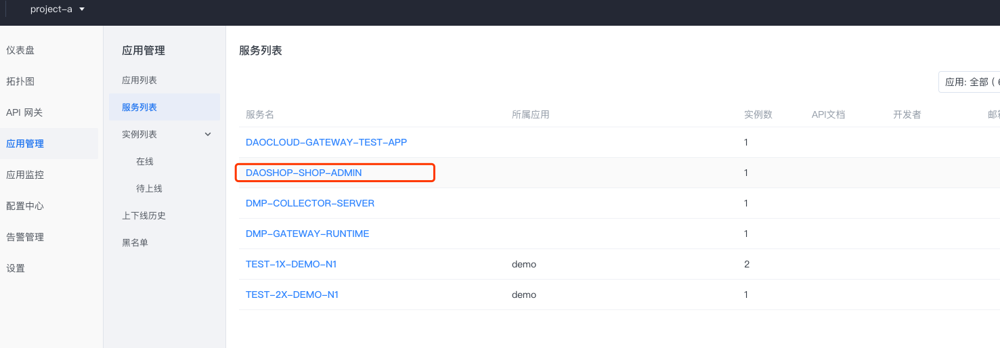
- 动态修改配置
更改配置中心gjjxaqllvb.dao_shop中application命名空间中key为daoshop.main.img的value，可以是任意字符串。比如：https://www.daocloud.io/static/contact-photo.png。
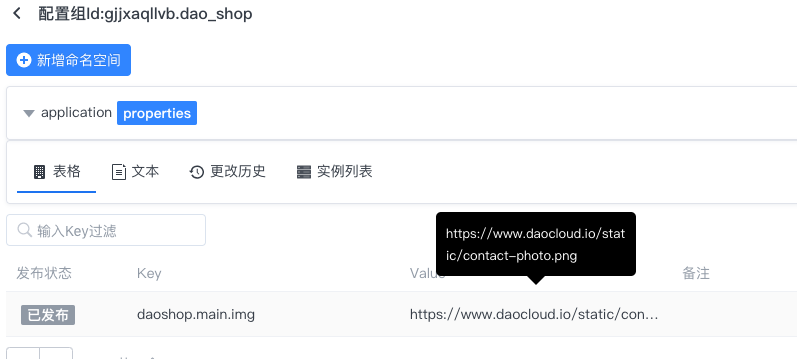
再次请求上面接口：
curl http://localhost:18083/admin/v1/image/main
响应如下：
[
"https://www.daocloud.io/static/contact-photo.png"
]
- 查看拓扑图
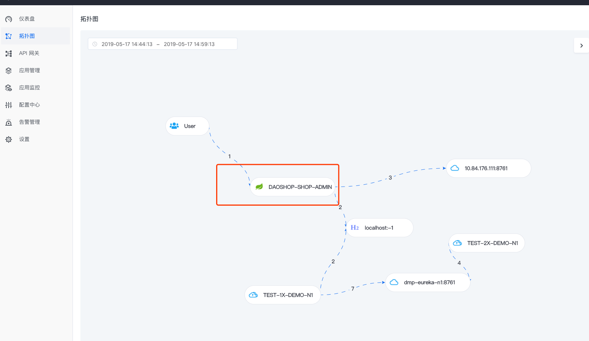
选择DAOSHOP-SHOP-ADMIN进入服务监控：
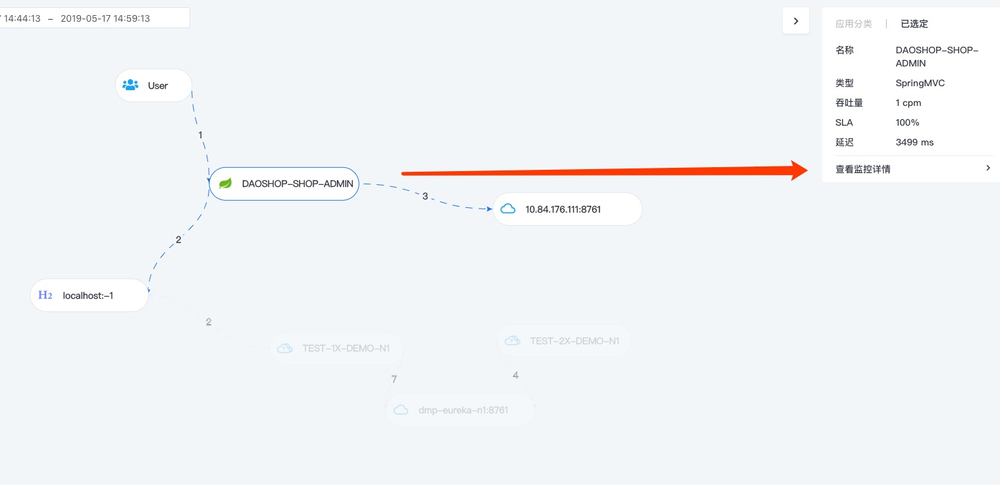 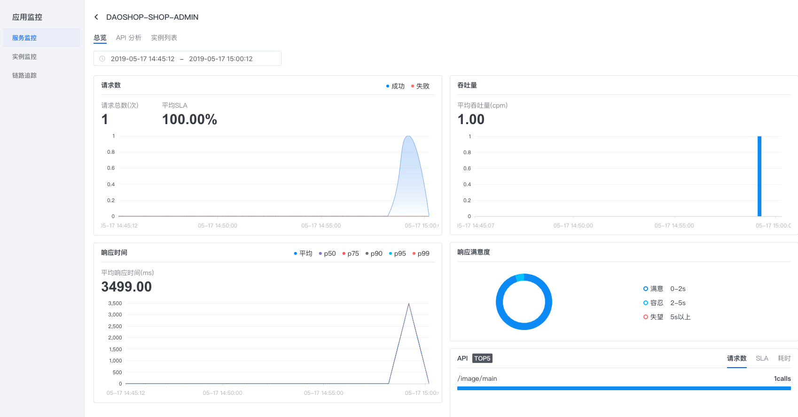
点击 Tab 页中实例列表:
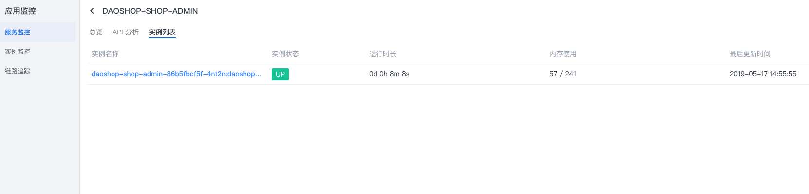
选中实例名称，可以跳转至实例监控页面：
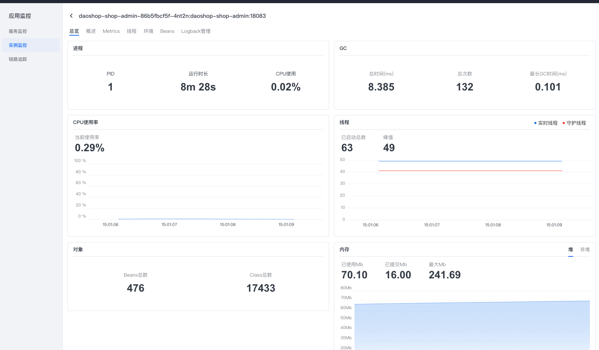
- 网关转发配置
创建API：
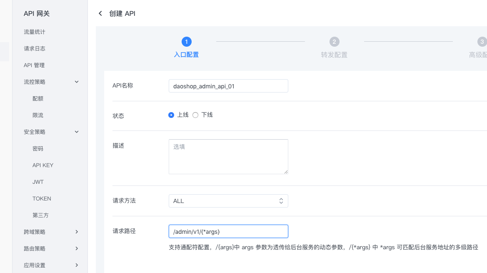
为API创建转发策略：
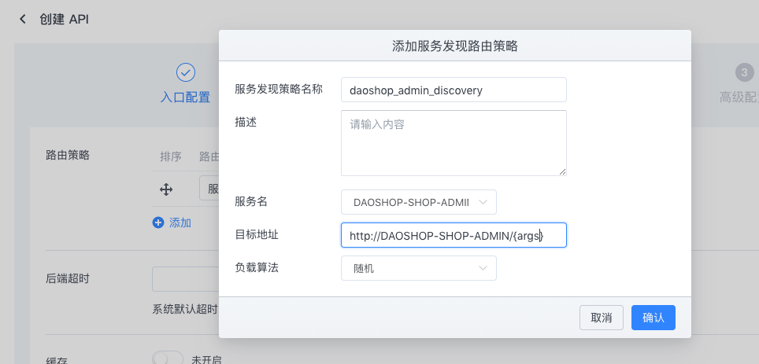
- 请求网关:
curl dmp-gateway-runtime-n1:9032/admin/v1/admin/v1/image/main
随后查看该API的一些监控信息：
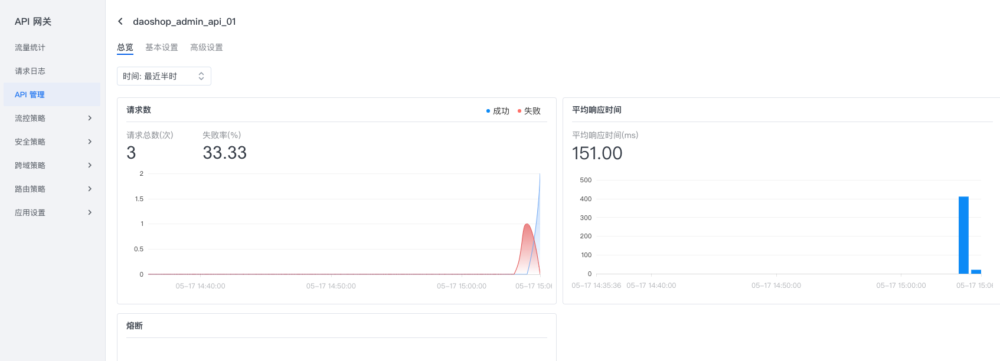
更多操作和接入说明请移步后续章节或产品使用手册。